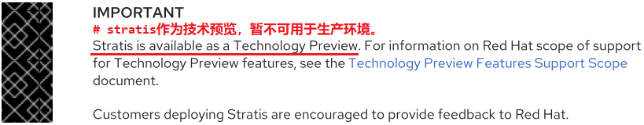
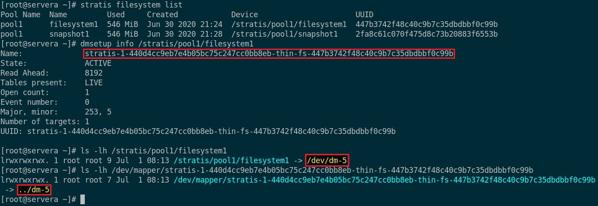
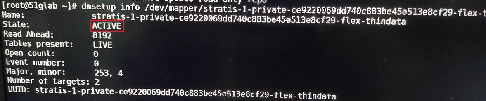

第八章 实施高级存储功能
目标：
- 使用stratis本地存储管理系统管理存储，并使用VDO卷优化使用中的存储空间。
章节：
- 使用stratis管理分层存储
- 使用VDO压缩存储和删除重复数据
第一节：使用stratis管理分层存储
目标：
- 完成本节后，学生应该能使用stratis本地存储管理系统管理多个存储层。
描述STRATIS架构：
- RHEL当前的本地存储解决方案中包含许多成熟、稳定的技术，其中包括设备映射器（dm）、
逻辑卷管理器（LVM）及XFS文件系统。
- 这些组件提供的功能包括可大规模扩展的文件系统、快照、冗余（RAID）逻辑设备、多路径、
精简配置、缓存、重复数据删除，以及对虚拟机和容器的支持。
- 每个存储堆栈层（dm、LVM和XFS）均使用专门面向层的命令和实用程序进行管理，这就要求
系统管理员将物理设备、固定大小的卷和文件系统作为独立的存储组件进行管理。
- 近年来出现了新一代的存储管理解决方案，称为卷管理文件系统，它可以在创建文件系统及
调整其大小时以动态、透明的方式来管理卷层。
- 不过，尽管这些文件系统的社区开发已经持续了很多年，但仍未达到成为RHEL主要本地存储
所需的功能支持和稳定性水平。
- 在RHEL 8中，红帽推出了 stratis 存储管理解决方案。
- 与其他存储项目一样，stratis的开发并不是从零开始，而是使用现有的RHEL存储组件。
- stratis以管理物理存储设备池的服务形式运行，并透明地为所创建的文件系统创建和管理卷。
- 由于stratis使用现有的存储驱动程序和工具，因此stratis也支持当前在LVM、XFS和
device-mapper中使用的所有高级存储功能。

- 在卷管理文件系统中，文件系统借助精简配置（thin provisioning）的概念内置于磁盘设备
的共享池中。
- stratis文件系统没有固定大小，也不再预分配未使用的块空间。
- 尽管文件系统仍构建在隐藏的LVM卷上，但stratis会管理基础卷，并可在需要时对其扩展。
- 文件系统的 “使用中（in-use）” 大小可视作所含文件占用的实际块数量。
- 文件系统的可用空间就是它所驻留的池设备中仍未使用的空间量。
- 多个文件系统可以驻留在同一磁盘设备池中，共享可用空间，但文件系统也可以保留池空间，
以便在需要时保证可用性。
- stratis使用存储的元数据来识别所管理的池、卷和文件系统。
- 因此，绝不应该对stratis创建的文件系统进行手动重新格式化或重新配置。
- 只应使用stratis工具和命令对它们进行管理。
- 手动配置stratis文件系统可能会导致该元数据丢失，并阻止stratis识别它已创建的文件系统。
- 可使用不同组的块设备来创建多个池。
- 在每个池中，可以创建一个或多个文件系统。
- 目前，每个池最多可以创建 224 个文件系统。
- stratis存储管理解决方案架构：

- 池可将块设备分组到数据层，或分组到缓存层（可选）。
- 数据层侧重于灵活性和完整性，而缓存层则侧重于提高性能。
- 由于缓存层旨在提高性能，因此应使用具有更高每秒输入/输出操作次数（IOPS）的块设备，
如SSD。
描述简化的存储堆栈：
- stratis简化了各红帽产品之间本地存储部署和配置的许多方面。
- 使用stratis的产品：Anaconda、Cockpit、红帽虚拟化和红帽企业Linux Atomic主机。
- 对于所有这些产品，stratis令存储空间和快照的管理变得更为简单，且更不容易出错。
- stratis更容易与高级管理工具进行集成。

描述Stratis层：
- 在内部，stratis使用 Backstore 子系统来管理块设备，并使用 Thinpool 子系统来管理池。
- Backstore子系统：
1. 数据层：负责维护块设备上的元数据，以及检测和纠正数据损坏。
2. 缓存层：使用高性能块设备，作为数据层之上的缓存。
- Thinpool子系统：
1. 管理与stratis文件系统关联的精简配置的卷（thin-provisioned volume）。
2. 该子系统使用 dm-thin device-mapper 驱动程序取代LVM进行虚拟卷管理。
- dm-thin可以创建虚拟空间比较大、采用XFS格式，但物理空间比较小的卷。
- 当物理空间快满时，stratis会自动将其扩大。
- stratis分层架构：


* 注意：
device-mapper存储驱动的用例：thin-provisioned、snapshot
LVM、stratis、vdo、device-mapper-multipath、crypted-image、docker
管理精简配置的文件系统：thin-provisioned（也称瘦模式）
- 管理精简配置的文件系统，需安装 stratis-cli 和 stratisd 软件包。
- stratis-cli软件包中提供了stratis命令，通过 D-Bus API 将用户请求转换为stratisd服务。
- stratisd软件包中提供了stratisd服务，它实现 D-Bus 接口管理和监控stratis的元素，如
块设备、池和文件系统。
* 注意：
必须保证dbus.socket与dbus.service处于运行状态，stratis-cli才能与stratisd.service
正常通信。

- 安装并激活stratis：
$ yum install -y stratis-cli stratisd
# 安装stratis-cli与stratisd软件包
$ systemctl enable --now stratisd.service
# 激活stratisd服务
- 使用stratis执行的常见管理操作：
1. 使用 stratis pool create 命令创建包含一个或多个块设备的池，每个池都是 /stratis
下的一个子目录。

2. 使用 stratis pool list 命令查看可用池的列表。

3. 使用 stratis pool add-data 命令向池中添加额外的块设备。

4. 使用 stratis blockdev list 命令查看池的块设备。

5. 使用 stratis filesystem create 命令为池创建动态、灵活的文件系统。
stratis文件系统的链接位于 /stratis/pool1 目录中。

6. 使用 stratis filesystem snapshot 命令创建文件系统快照。
快照独立于源文件系统。

7. 使用 stratis filesystem list 命令查看可用文件系统的列表。

8. 为了持久挂载stratis文件系统，需编辑/etc/fstab。


* 注意：
1. x-systemd.requires=stratisd.service 挂载选项可延迟挂载文件系统，直到systemd
在启动过程中启动stratisd.service为止。
2. stratis中的设备均由device-mapper存储驱动映射管理。

* 注意：
1. stratisd服务正常，lsblk命令可查看相关stratis设备，但无法使用stratis命令查看stratis
设备，输出返回结果为空，并无法删除stratis设备。
2. $ dmsetup info /dev/mapper/stratis-*：查看相关stratis设备的状态

3. 当stratis设备为ACTIVE状态时，无法将其删除，需转换为SUSPEND状态。
4. $ dmsetup suspend /dev/mapper/stratis-*：设置stratis设备为SUSPEND状态
5. $ dmsetup remove /dev/mapper/stratis-*：删除stratis设备
6. stratis设备全部删除后，使用 lsblk --fs 命令查看磁盘设备时依然显示stratis类型，
该状态下可直接使用该磁盘设备（分区、格式化与挂载等）。
练习 P223：MANAGING LAYERED STORAGE WITH STRATIS
第二节：使用VDO压缩存储和删除重复数据
目标：
- 完成本节后，学生应该能使用VDO压缩存储设备上的数据并进行重复删除，以此来优化存储空间
的使用。
描述虚拟数据优化器：virtual data optimizer
- RHEL 8包含虚拟数据优化器（VDO）驱动程序，可以优化块设备上数据的空间占用。
- VDO是一个Linux设备映射器驱动程序，它可以减少块设备上的磁盘空间使用，同时最大限度减少
数据重复，从而节省磁盘空间，甚至提高数据吞吐量。
- VDO的两个内核模块：
1. kvdo 模块：用于以透明的方式控制数据压缩
2. uds 模块：用于重复数据删除

- VDO层位于块存储设备（如RAID阵列或本地磁盘）的顶部。
- 存储层（如LVM逻辑卷和文件系统）位于VDO设备之上。

- VDO按以下顺序对数据实施三个阶段的处理，以减少空间占用：
1. 零块消除将过滤掉仅包含零（0）的数据块，且仅在元数据中记录这些块的信息。
非零数据块随即被传递到下一个处理阶段。
该阶段将启用VDO设备中的精简配置（thin provisioned）功能。
2. 重复数据删除去除冗余的数据块。
在创建相同数据的多个副本时，VDO会检测重复数据块并更新元数据，以便使用这些重复块
来引用原始数据块，而不会创建冗余数据块。
uds内核模块将通过其维护的元数据来检查数据的冗余。
3. 最后一个阶段是压缩。
kvdo内核模块使用 LZ4 压缩对块进行压缩，并以 4KB 块进行分组。
实施VDO：
- 利用VDO创建的逻辑设备被称为VDO卷。
- VDO卷与磁盘分区类似，可以将这些卷格式化为所需的文件系统，并进行挂载。
- 此外，还可以将VDO卷用作LVM物理卷（PV）。
- 要创建VDO卷，需指定块设备和逻辑设备的名称。
- 也可以指定VDO卷的逻辑大小（可选）。
- VDO卷的逻辑大小可以大于实际块设备的物理大小。
- 由于VDO卷采用了精简配置，因此用户只能看到正在使用的逻辑空间，而无法了解实际可用的
物理空间。
- 如果在创建卷时未指定逻辑大小，则VDO会将实际物理大小视为卷的逻辑大小。
- 这种采用 1:1 的比率映射方式有利于提高性能，但也会降低存储空间的使用效率。
- 应根据基础架构要求来确定是优先考虑性能还是空间效率。
- $ vdostats --verbose
# 当VDO卷的逻辑大小超过实际物理大小时，主动监控卷统计信息，以查看实际使用情况。

启用VDO：
- $ yum install -y vdo kmod-kvdo
# 安装VDO与kmod-kvdo软件包
创建VDO卷：
- $ vdo create \
--name=<vdo_volume_name> --device=<device_name> --vdoLogicalSize=<number>
# 创建VDO卷

$ vdo list
# 查看当前VDO卷的列表
$ vdo remove --name=<vdo_volume_name>
# 删除VDO卷

- 如果省略逻辑大小，则生成的VDO卷将与其物理设备的大小相同。
分析VDO卷：
- $ vdo status --name=<vdo_volume_name>
# 查看VDO卷的详细信息，结果以YAML格式返回。
启动与停止VDO卷：
- 默认情况下，VDO卷创建时即已启动。
- $ vdo stop --name=<vdo_volume_name> --confFile=/etc/vdoconf.yml
# 停止指定的VDO卷
$ vdo stop --all --confFile=/etc/vdoconf.yml
# 停止所有的VDO卷
- $ vdo start --name=<vdo_volume_name> --confFile=/etc/vdoconf.yml
# 启动指定的VDO卷
$ vdo start --all --confFile=/etc/vdoconf.yml
# 启动所有的VDO卷
* 注意：
1. VDO卷管理服务由systemd管控，该服务用于启动与停止VDO卷，而非VDO卷守护进程。
2. 将该服务关闭后，依然可创建VDO卷，而stratisd服务关闭后无法使用stratis。
3. 可使用该服务启动或停止所有的VDO卷。

练习 P232：COMPRESSING AND DEDUPLICATING STORAGE WITH VDO
Lab P236：IMPLEMENTING ADVANCED STORAGE FEATURES